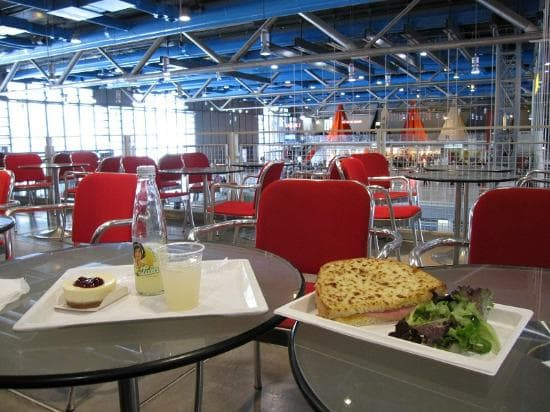
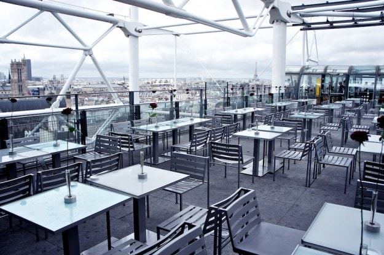
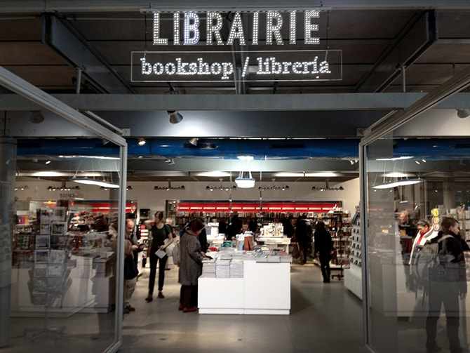

Prix/Budget
Payer à posteriori
Le café Mezzanine
Le café Mezzanine est un petit café-restaurant se trouvant au second étage du centre et possédant une vue d'ensemble du centre. C'est un agréable espace de détente qu'il peut être intéressant d'expérimenter lors d'une petite pause. Attention tout de même à votre porte-feuille car les prix sont un peu trop excessif ! A 4€50 le verre de jus d’orange et 8€ le sandwich, on hésite à s’y payer quelque chose à manger et même à grignoter ...

Le Georges
Toujours plus cher, le restaurant! Se trouvant sur le toit du centre, il possède une des plus belle vue de Paris. A noter que le prix "Billet vue de Paris" est de 3€. Le restaurant du Georges-Pompidou appelé “Le Georges" est un lieu attrayant pour quiconque sauf si l'on y témoigne des prix. Avec un prix à la carte moyennant entre 60 et 90 € hors boisson, on s'inquiète pour son porte-feuille.

La Boutique/librairie Flammarion
Enfin, dernier endroit payant du centre, la librairie Flammarion. Elle propose des éditions se renouvelant continuellement et s'adaptant à tous les publics. La boutique se spécialise en art, design, architecture et photographie. La librairie Flammarion vous propose un large éventail de catalogues, monographies, essais mais aussi des goodies : cartes postales, affiches et accessoires. Notons tout de même des prix toujours aussi colossaux (disponibles depuis le site).
